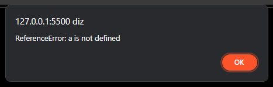

alertando erros com JS
olá dev; hoje vamos ver como saber onde estao os erros , do seu codigo , ou como alerta-los com o JS
Primeira mente , devemos saber o que é try , try significa algo como tente pede para a maquina tentar fazer algo
try{
//definimos a primeira variavel , b=x
var x=a;
var b =x ;
alert(b)
// o catch serve para se o codigo que se esta sendo testado ,esta certo se tiver errado ele fara oque esta no catch
} catch(erroNaLinha3ou4) {
alert(erroNaLinha3ou4.toString // aparecera um alerta na tela se der errdo(
))
}
Ao executar o codigo aparecera esse alerta
